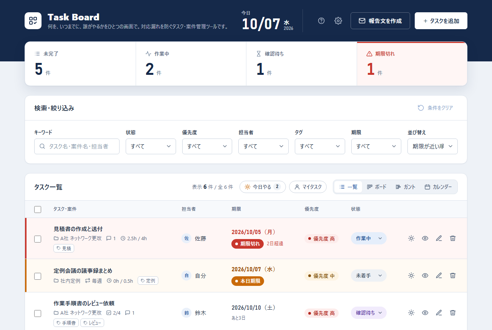
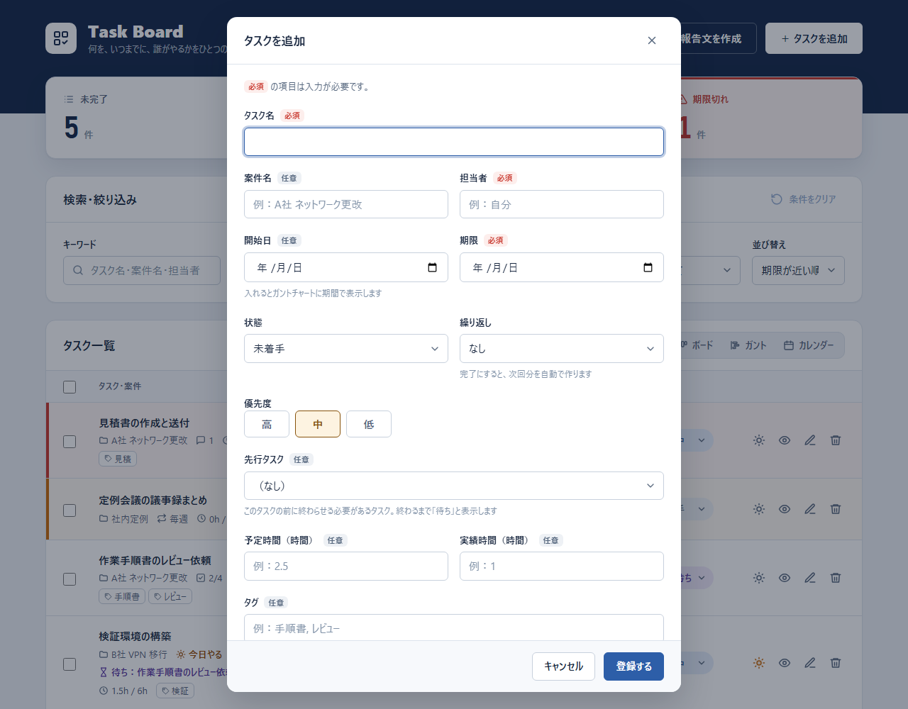
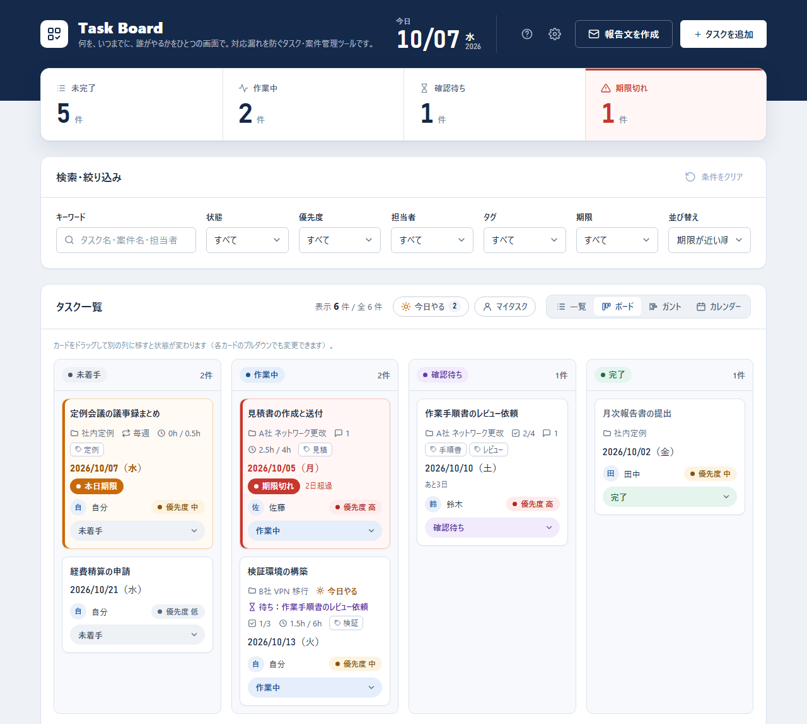
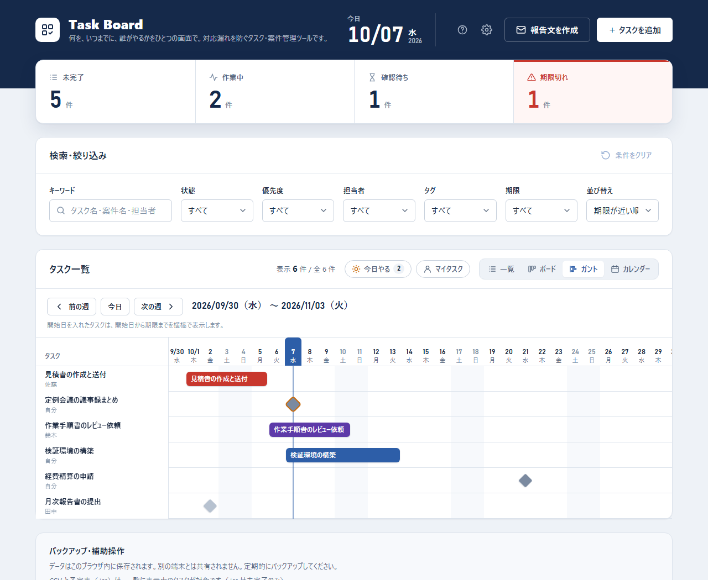
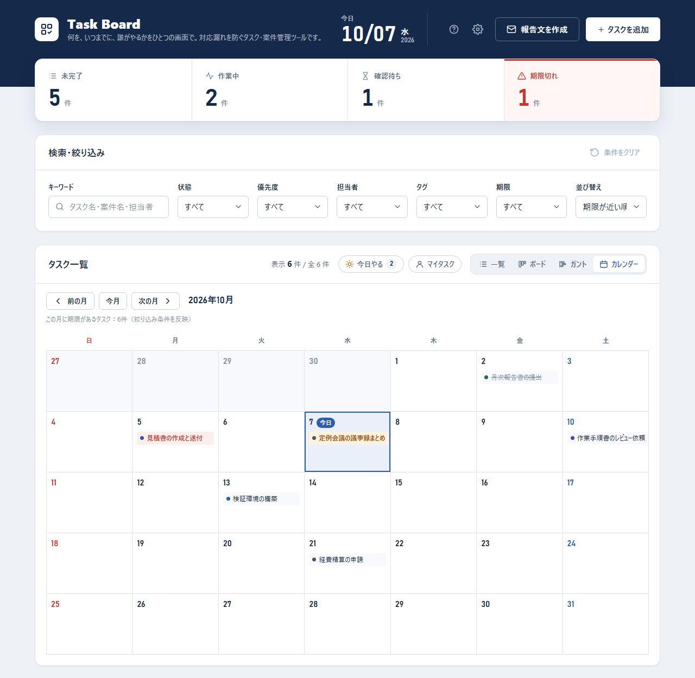
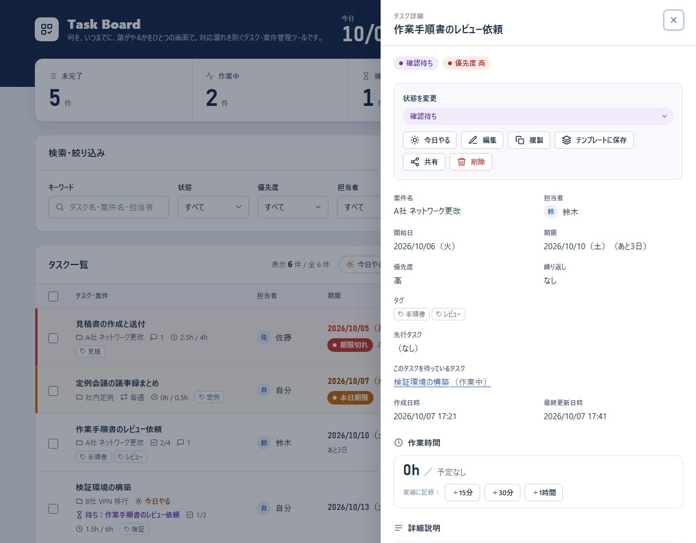
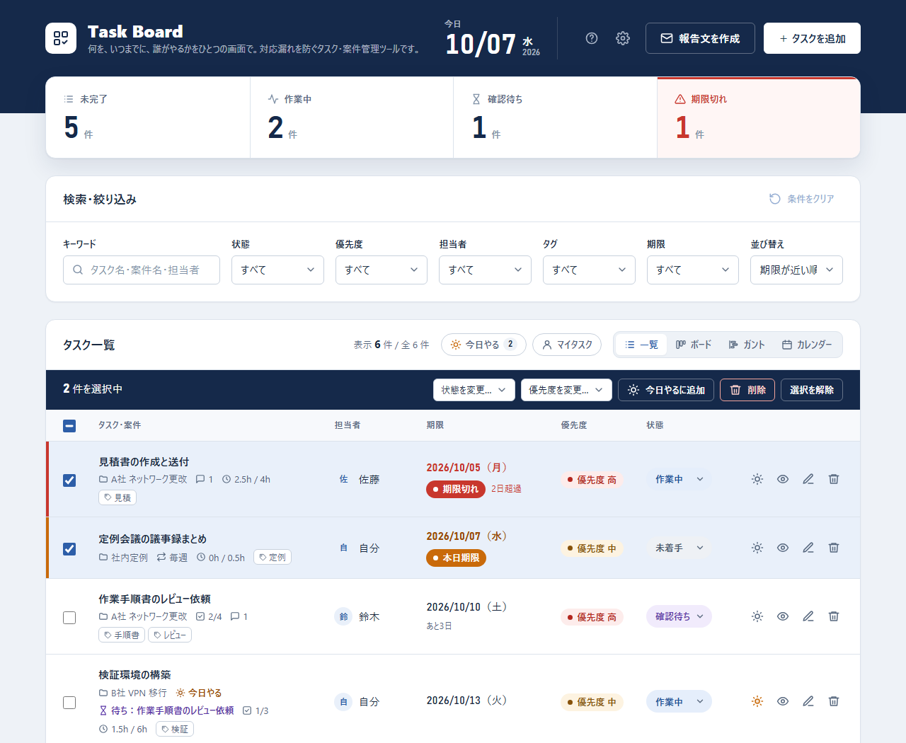
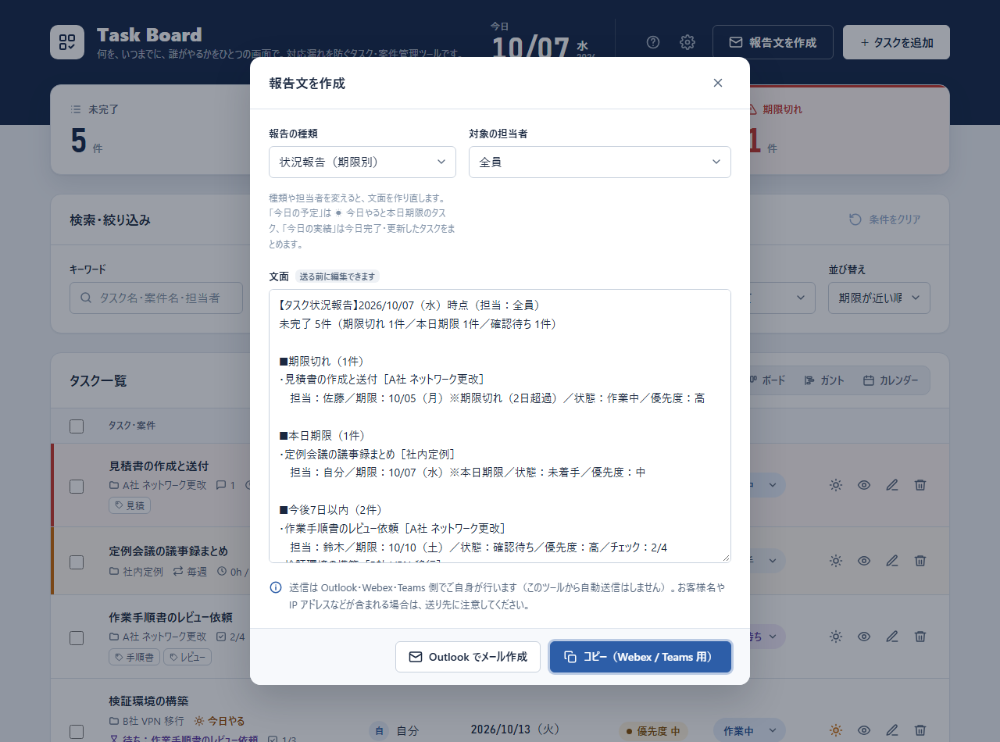
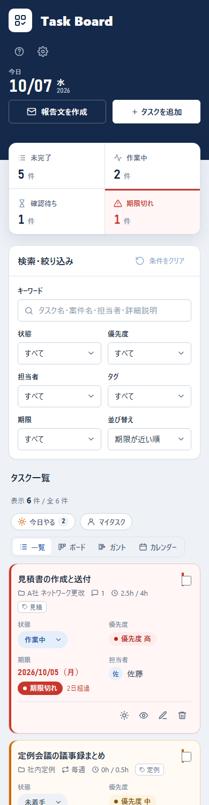
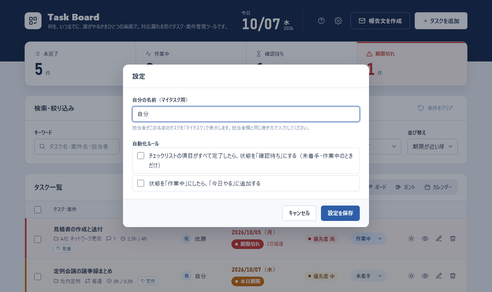

はじめに・2 つの版
Task Board には、データの置き場所が違う 2 つの版があります。画面と操作はどちらも同じです。
| 版 | 開き方 | データの保存場所 | 向いている使い方 |
|---|---|---|---|
| ローカル版 | フォルダの index.html をブラウザで開く | この PC のブラウザの中だけ | 社外秘の案件、お客様名や IP アドレスを含むタスク |
| claude.ai 版 | claude.ai または Claude アプリで、公開済みの Task Board を開く | claude.ai（自分だけが見られる領域） | PC と iPhone で同じタスクを見たいとき |
claude.ai 版には、お客様名・IP アドレス・ホスト名などを入力しないでください。データは Anthropic のサーバーに保存されます。会社の規定でクラウドへの保存が認められているかも確認してください。
ローカル版の起動
- フォルダの
index.htmlをダブルクリックします（Chrome・Edge を推奨）。 - 初回は空の画面に「最初のタスクを登録する」「サンプルデータを追加する」が表示されます。操作を試すときはサンプルデータを追加してください。
画面上部に「データを保存できません」と出た場合は、README の「ローカルサーバーで起動する」の手順で開いてください。
画面の見方

- ヘッダー：今日の日付（期限判定の基準）、使い方（このマニュアル）、設定、「報告文を作成」、「＋ タスクを追加」。
- サマリー：未完了・作業中・確認待ち・期限切れの件数です。絞り込みに関係なく全タスクを数えます。押すとその条件で一覧を絞り込み、もう一度押すと解除します。
- 検索・絞り込み：キーワードや状態などで一覧を絞ります（6 章）。
- タスク一覧：右上で「今日やる」「マイタスク」と、表示の種類（一覧・ボード・ガント・カレンダー）を切り替えます。
- バックアップ・補助操作：画面のいちばん下。JSON・CSV・予定表の書き出し、テンプレート、サンプルデータ。
期限の色分け
判定は、お使いの端末の日付が基準です。完了したタスクは、期限が過ぎていても期限切れになりません。
- 期限切れ 期限が今日より前で、完了していないタスク。行が赤くなり、何日過ぎたかを表示します。
- 本日期限 期限が今日で、完了していないタスク。行がオレンジになります。
- 期限まで 3 日以内のタスクには「あとN日」と表示します。
タスクを登録する

- 右上の「＋ タスクを追加」を押します（キーボードの N でも開きます）。
- タスク名・担当者・期限を入力します（この 3 つが必須です）。案件名と担当者は、登録済みの値が候補に出ます。
- 必要に応じて、残りの項目を入力します。
- 開始日：入れると、ガントチャートに開始日〜期限の横棒で表示します。
- 繰り返し：毎日・平日・毎週・毎月。完了にすると次回分を自動で作ります（8 章）。
- 先行タスク：このタスクの前に終わらせる必要があるタスク。終わるまで「待ち」と表示します。
- 予定時間・実績時間：時間単位（0.25 = 15 分）。
- タグ：カンマ（,）か読点（、）で区切って複数付けられます（例：
手順書, レビュー）。
- 「登録する」を押します。入力漏れがあると、その項目の下に赤字で理由が表示されます。
テンプレートがある場合は、フォームの一番上の「テンプレートから入力」で呼び出せます（8 章）。claude.ai 版では「Claude で入力」も使えます（11 章）。
編集は、一覧の鉛筆アイコンか、詳細パネルの「編集」から行います。保存していない入力があるまま閉じようとすると、破棄してよいか確認します。
一覧・ボード・ガント・カレンダー
タスク一覧の右上のボタンで、4 つの表示を切り替えます。V キーで順番に切り替わります。選んだ表示は次回も使われます。どの表示にも、検索・絞り込みの条件がそのまま効きます。
一覧
表の形で並べます。状態はプルダウンからその場で変更できます。☀ は「今日やる」（5 章）、目のアイコンは詳細、鉛筆は編集、ゴミ箱は削除です。スマートフォンではカードの形で表示します。
ボード（カンバン）

ガントチャート

- 表示するのは 5 週間分です。「前の週」「次の週」で移動し、「今日」で戻ります。
- 棒の色：灰色＝未着手、青＝作業中、紫＝確認待ち、薄い灰色＝完了、赤＝期限切れ。
- 棒を押すと詳細パネルが開きます。
カレンダー

「前の月」「次の月」で移動し、「今月」で戻ります。スマートフォンでは、予定のある日だけを日付順の一覧で表示します。
今日やる・マイタスク
今日やる（☀）
今日取り組むタスクに印を付ける機能です。日付が変わると印は自動で外れるので、毎朝その日の分を選び直します。
- 一覧の ☀ アイコン、または詳細パネルの「今日やる」を押します。
- 一覧の右上の「今日やる」を押すと（T キーでも可）、☀ を付けたタスクと本日期限のタスクだけを表示します。横の数字は、そのうち未完了の件数です。
マイタスク
自分が担当のタスクだけを表示します（M キーでも可）。「自分の名前」は設定で決めます（初期値は「自分」）。担当者欄と同じ書き方にしてください。
検索・絞り込み・並び替え
- キーワード（/ キーで移動）：タスク名・案件名・担当者・詳細説明・タグが対象です。スペースで区切ると、すべてを含むタスクに絞ります。全角・半角、大文字・小文字は区別しません。
- 状態・優先度・担当者・タグ・期限：組み合わせて使えます。期限は「期限切れ」「本日期限」「今後7日間（未完了）」「今日やる」から選びます。
- 並び替え：期限が近い順／更新が新しい順／優先度が高い順。期限順と優先度順では、完了したタスクを末尾にまとめます。
- 「条件をクリア」で絞り込みをまとめて解除します（並び替えはそのまま）。
詳細パネル

- 上部のボタン：状態の変更、今日やる、編集、複製、テンプレートに保存、共有、削除。
- 先行タスク／このタスクを待っているタスク：タスク名を押すと、そのタスクの詳細に切り替わります。先行タスクを完了にすると、「〇〇に着手できます」とお知らせします。
- 作業時間：「＋15分」「＋30分」「＋1時間」で実績時間を記録します。予定時間を超えると赤で知らせます。
- チェックリスト：作業の手順や確認項目を登録し、チェックを付けて進めます（例：事前確認 → 作業 → 事後確認 → 切戻し準備）。進捗は一覧にも「2/4」のように表示します。
- メモ：対応内容や連絡事項を残します（Ctrl + Enter でも追加）。
- 対応履歴：作成・編集・状態変更・メモ・チェックリストの変更が、新しい順に自動で残ります。状態変更は「未着手 → 作業中」のように前後を表示します。
Esc キーか右上の × で閉じます。
繰り返し・テンプレート・複製
繰り返しタスク
定例会議の議事録や週報など、決まった周期で発生するタスクに使います。
- 登録フォームの「繰り返し」で、毎日・平日（月〜金）・毎週・毎月を選びます。
- タスクを完了にすると、次回分を自動で作ります。チェックリストは未完了に戻り、メモと履歴は引き継ぎません。
- 遅れて完了した場合も、次回の期限は今日以降の日になります。「毎月」で 31 日のように月末の日を選ぶと、その月の末日にそろえます。
- 完了 → 未完了 → 完了と切り替えても、次回分が二重にできることはありません。
テンプレート
- 雛形にしたいタスクの詳細パネルで「テンプレートに保存」を押し、名前を付けます。
- 「＋ タスクを追加」のフォームの一番上の「テンプレートから入力」で選びます。タスク名・案件名・担当者・優先度・繰り返し・タグ・詳細説明・チェックリストが入ります。
- 期限を入れて登録します。
テンプレートの確認と削除は、画面下部の「テンプレート」から行います。
複製
詳細パネルの「複製」で、同じ内容の新しいタスクを作ります。タスク名に「（コピー）」が付き、状態は未着手、チェックリストは未完了の状態で引き継ぎます。
まとめて操作・元に戻す

- 一覧表示で、左端のチェックボックスでタスクを選びます（見出しのチェックで、表示中のすべてを選択）。
- バーで、状態の変更・優先度の変更・今日やるに追加・削除を選びます。変更は各タスクの対応履歴にも残ります。
削除の取り消し：削除の直後に出る通知の「元に戻す」を押すと、メモや履歴も含めて元に戻ります（通知が出ている約 8 秒の間）。
報告文と Outlook・Webex・Teams

- ヘッダーの「報告文を作成」を押します。
- 報告の種類を選びます。
- 状況報告（期限別）：未完了のタスクを「期限切れ／本日期限／今後7日以内／8日以降」に分けて並べます。上長への進捗報告向けです。
- 今日の予定（出社時）：「今日やる」と本日期限のタスク、それに期限切れのタスク。Webex の出社連絡向けです。
- 今日の実績（退社時）：今日完了したタスクと、今日進めたタスク。明日が期限のタスクも添えます。
- 必要なら対象の担当者を選び、文面を手直しします。
- 送り先に合わせてボタンを押します。
- コピー（Webex / Teams 用）：Webex のスペースや Teams のチャットに Ctrl + V で貼り付けます。
- Outlook でメール作成：件名と本文の入った下書きを開きます。宛先を入れて、Outlook から送信してください。
このツールから自動で送信することはありません。送信は、必ず Outlook・Webex・Teams で内容を確認してから行ってください。
タスク 1 件だけを伝えたいときは、詳細パネルの「共有」を使います。
メールが開かないとき
- Windows の既定のメールアプリが Outlook になっているか確認してください（設定 → アプリ → 既定のアプリ → 「MAILTO」）。
- 本文が長い場合は、件名だけで下書きを開き、本文をクリップボードにコピーします。下書きの本文欄に貼り付けてください。
- claude.ai 版や Claude アプリでは、メールが開かないことがあります。その場合は「コピー」で文面をコピーしてください。
Outlook の予定表に期限を入れる（ローカル版のみ）
詳細パネル →「共有」→「予定表（.ics）」で 1 件、画面下部の「予定表（.ics）」で表示中の未完了タスクをまとめて書き出します。ファイルを開くと Outlook に取り込めます。期限日の終日予定として登録され、前日の 9:00 に通知します。
iPhone の Claude アプリで使う
claude.ai 版を開くと、PC のブラウザと iPhone の Claude アプリで同じタスクを扱えます。どちらかで変更すると、もう一方にもすぐに反映されます。

開き方
- PC の claude.ai で、公開済みの Task Board を開きます（Claude Code から受け取ったリンク）。必要ならサイドバーにピン留めしておきます。
- iPhone の Claude アプリで同じアカウントにログインし、同じ Task Board を開きます。
- ヘッダーに「claude.ai に保存済み」と表示されていれば同期しています。
同期の表示
- claude.ai に保存済み：最後に保存した時刻を表示します。
- claude.ai に保存中…：送信中です。
- 赤い表示：保存できなかった変更があります。この端末には残っているので、表示を押すと送り直します。
Claude で入力・手順の提案（claude.ai 版のみ）
- Claude で入力：「＋ タスクを追加」の一番上に、文章を書く欄があります。たとえば「来週火曜までにA社の見積書を作る。担当は佐藤さん。急ぎ」と書いて「Claude で入力」を押すと、タスク名・担当者・期限・優先度などを埋めます。内容を確認してから登録してください。iPhone の音声入力とも相性が良い機能です。
- Claude で手順を提案：詳細パネルのチェックリスト欄にあります。タスクを進める手順の案を Claude が出し、確認してから追加できます。
- 初めて使うときは、Claude を使ってよいかの確認が表示されます。Claude の利用は、お使いの Claude アカウントの利用量に含まれます。
claude.ai 版には、お客様名・IP アドレス・ホスト名などを入力しないでください。案件名は社内の略称にするなど、工夫してください。
claude.ai 版でできないこと
- 予定表（.ics）の書き出し（claude.ai からは保存できない形式のため）。ローカル版をお使いください。
- ローカル版とのデータの自動共有。移すときは、ローカル版で「JSONをエクスポート」し、claude.ai 版で「JSONからインポート」します。
設定と自動化ルール

- 自分の名前：マイタスクで使う名前です。
- チェックリストの項目がすべて完了したら、状態を「確認待ち」にする：作業が終わったら自動でレビュー待ちに回したいときに使います（未着手・作業中のタスクだけが対象）。
- 状態を「作業中」にしたら、「今日やる」に追加する：着手したタスクを今日の予定に自動で入れます。
ルールは初期状態ではオフです。設定はバックアップ（JSON）にも含まれます。
バックアップ・書き出し
- JSONをエクスポート：全タスク（チェックリスト・メモ・履歴を含む）、テンプレート、設定を 1 つのファイルに書き出します。定期的に実行してください。
- JSONからインポート：書き出したファイルで復元します。今のデータはすべて置き換わります（実行前に確認が出ます）。形式がおかしいファイルは読み込まず、今のデータも消しません。古い版（v1・v2）のファイルも読み込めます。
- CSV（Excel）：表示中のタスクを、Excel で文字化けしない形式で書き出します。
- 予定表（.ics）：10 章を参照してください（ローカル版のみ）。
ローカル版のデータは、このブラウザの中にだけ保存されます。ブラウザの「閲覧データの削除」で消えることがあり、シークレットウィンドウでは閉じると消えます。
キーボードショートカット
| キー | 動作 |
|---|---|
| N | タスクを追加 |
| / | キーワード検索へ移動 |
| V | 表示を切り替え（一覧 → ボード → ガント → カレンダー） |
| T | 今日やるの表示／解除 |
| M | マイタスクの表示／解除 |
| Esc | ダイアログ・詳細パネルを閉じる |
| Ctrl + Enter | メモの追加／Claude で入力の実行 |
文字を入力している間とダイアログを開いている間は、Esc 以外は反応しません。
困ったとき
別の PC やブラウザでデータが見えない
ローカル版のデータは、そのブラウザの中だけに保存されます。JSON でエクスポートし、別の環境でインポートしてください。端末をまたいで使いたい場合は claude.ai 版を使います。
「保存容量の上限を超えたため、保存できませんでした」と出た
その変更は保存されていません。まず「JSONをエクスポート」でバックアップを取り、完了した古いタスクを削除してください。
claude.ai 版の同期の表示が赤くなっている
変更が claude.ai に保存できていません。表示を押すと送り直します。続く場合は、通信状態を確認するか、ページを読み込み直してください。この端末の画面上の内容は残っています。
繰り返しタスクの次回分ができない
次回分は、状態を「完了」にしたときに作られます。繰り返しが「なし」になっていないか、編集画面で確認してください。
「Claude で入力」が表示されない
claude.ai 版だけの機能です。claude.ai 版でも表示されない場合は、Claude を使う許可が出ていない可能性があります。
削除したタスクを戻したい
削除直後の通知の「元に戻す」で戻せます。通知が消えたあとは、以前のバックアップ（JSON）からのインポートで戻すしかありません。